Unit 2A - Mensuration - Rectangle, Square, Triangle, Parallelogram, Trapezium and Circle, Arc Length and Area of Sector
1. A circular pond of radius 3 m is surrounded by a path 1 m wide. Find, in terms of π, in their simplest form, expressions for
(a) the circumference of the circle forming the outer edge of the path,
(b) the area of the path.
2. The circumference of a circle, centre O, is 99 cm.
(a) Taking π to be , calculate the diameter of the circle.
(b) Given that A and B are points on the circumference of the circle such that AÔB = 80°, calculate the length of the minor arc AB.
3. A quadrant of a circle of radius 7 cm is removed from a rectangle 15 cm long and 10 cm wide, as shown in the diagram.
(a) Taking π to be , calculate
(i) the length of the arc PQ,
(ii) the area of the shaded portion APQCB.
(b) Given that the shape APQCB, shaded in the diagram is cut from a sheet of metal 3 mm thick, calculate, in cm3, the volume of metal used.
4. A man is paving the rectangular area ABCD with 24 concrete slabs each of which is 50 cm square. By the end of the first day he has completed the shaded portion.
(a) Expressing your answers as fractions in their lowest terms, calculate the ratio of
(i) the shaded area to the area of ABCD,
(ii) the perimeter of the shaded area to the perimeter of the area ABCD.
(b) The volume of each slab is 0.02 m3. Calculate the thickness of a slab, giving your answer in cm.
(c) The mass of each slab is 30 kg. Calculate the density of the concrete, expressing your answer in g/cm3.
(d) The man buys the 24 slabs from a builder at a total cost of £55.44. Given that the builder makes a profit of 32% when selling these 24 slabs. Calculate the price paid by the builder for each slab.
5. In the diagram, O is the centre of a circle of radius 3 cm and AÔB = 70°. Taking π to be , calculate
(a) the circumference of the circle,
(b) the area of the shaded sector AOB.
6. Lawn covers one third of the area of a garden and two fifths of the area is used for growing flowers. Vegetables are grown on the remainder. Find the area of the vegetable plot, given that the area of the whole garden is 420 m2.
7. OABC is quadrant of a circle of radius 10 cm. Calculate
(a) the area of the triangle OAC,
(b) the shaded area, taking π to be 3.142.
8. ABCD is a rectangle and O is the mid-point of AD. A semicircle of radius 7 cm is drawn on AD as diameter. The semicircle cuts the side BC at P and R such that PÔA = 30°. Calculate
(a) AD,
(b) AB,
(c) BP.
Taking π to be , calculate
(d) the length of the arc PQR,
(e) the area of the shaded segment PQR.
9. (a) The area of the shaded sector AOB is of the area of the whole circle. Calculate AÔB.
(b) Given that the area of the circle is 154 cm2, calculate the radius of the circle. [Take π to be .]
10. The diagonals of a rhombus are of lengths 14 cm and 6 cm. Calculate the area of the rhombus.
11. (a) A rectangular courtyard 17 m long by 9 m wide is to be covered by square paving slabs each of side m. Calculate the number of paving slabs which will be required.
(b) A different area to be paved needs 390 slabs. Given that one-third of these cost $1.20 each and the remainder cost $1.40 each, calculate the total cost of the slabs.
12. The diagram shows a sector OAB of a circle, centre O, radius 7 cm, in which AÔB = 30°. Taking π to be , calculate
(a) the perimeter of the sector,
(b) the area of the sector.
13. (a) A brand of paint contains 0.021 grams of colouring per litre. Calculate the mass of colouring in 400 litres of the paint.
(b) A rectangular flower bed has an area of 7.6 m2. Given that its width is 0.8 m, calculate its length.
14. The sides of a rectangle are given as x cm and y cm, where and .
Calculate
(a) the smallest possible value of the perimeter of the rectangle,
(b) the largest possible value of the area of the rectangle.
15. ABCD is a parallelogram in which is obtuse and AB > AD. Given that AB = 9 cm and that the area of the parallelogram = 30.6 cm2, calculate the length of the perpendicular from A to DC.
16. The diagram shows the plan of a sports ground. The shaded part is made up of a rectangular area 120 m by 80 m and two semi-circular areas of radius 40 m. The shaded area is surrounded by a running track 6 m wide.
(a) Taking π to be 3.142, calculate
(i) the total shaded area,
(ii) the outer perimeter of the running track.
(b) S, M and F are three points on the inner perimeter of the track, as shown in the diagram.
An athlete ran from S to F via M, along the inner perimeter of the track, at a speed of 5.6 m/s. Starting at the same time as the athlete, a man walked directly from S to F. Given that they both arrived at F at the same time, calculate the speed, in m/s at which the man walked.
17. A piece of card is cut to the shape shown in the diagram. The perimeter of the card consists of three semicircular arcs AEB, BDO and OCA. Given that AO = OB = 10 cm and taking π to be 3.14, calculate
(a) the length of the semicircular arc ACO,
(b) the perimeter of the card,
(c) the area of the card.
18. In this question, take π to be .
(a) Find the area of a circle of radius 7 cm.
(b) A solid circular cylinder of radius 7 cm and length 8 cm is made of metal alloy. Given that 1 cm3 of the alloy has a mass of 5 g, find the mass, in grams, of the cylinder.
(c) The alloy of this cylinder is used, without waste, to make a length of thin wire. Given that the wire is a circular cylinder of radius 0.007 cm, find its length in metres.
19. One end of a piece of string of length 1.6 m is fixed to a point P. A ball is attached to the other end and its centre moves along a circular arc between A and B, the two extreme positions of its path. X is the mid-point of the horizontal line joining A and B. The point C is the lowest position of the path of the centre of the ball. Given that, in the extreme positions A and B, the string makes an angle of 40° with the vertical, calculate
(a) PX,
(b) the height of C above the ground,
(c) the length of the arc ACB. [Take π to be 3.142].
20. The diagram, which is not drawn to scale, represents the floor of a room. All dimensions are in metres and all the angles are right angles.
Calculate
(a) the perimeter of the room,
(b) the area of the floor,
(c) the volume of the room, giving that it is 3 metres high.
21. A circle, centre O, has a radius of 7 cm. PQ is a diameter and R is a point on the circumference of the circle. Given that PÔR = 108°, and taking π to be , calculate
(a) the length of the minor arc PR,
(b) the perimeter of the sector POR,
(c) the area of the sector QOR.
22. (a) The area of a piece of land is 4.08 km2.
(i) It is bought at a price of $56 000 per square kilometre. Calculate the total cost of the land, giving your answer to the nearest $100.
(ii) The piece of land is rectangular, with its shorter side of length 1.2 km. Calculate its perimeter.
(iii) If the piece of land is divided into three parts in the ratio 8 : 7 : 3, calculate the area of the smallest part.
(iv) Given that 1 hectare = 104 square metres, express the area of the whole piece of land in hectares.
(b) Calculate the area of the trapezium PQRS in which = = 90°, = 45°, PS = 17 cm and QR = 23 cm.
23. (a) The cross-section of a railway tunnel is the major segment APB of a circle, centre O, as shown in the diagram. Given that OA = OB = 3 m, AÔB = 80° and taking π to be 3.142, calculate
(i) AB,
(ii) the length of the arc APB,
(iii) the area of the triangle AOB,
(iv) the area of the segment APB.
(b) The tunnel is 382 m long. Calculate the number of seconds it will take a train, 118 m long, travelling at 200 km/h, to pass completely through the tunnel.
24. [You do not need a numerical value of π in this question.]
The circle, centre B, has radius 3 cm and A&Bcirc;C = 120°. The circle, centre Q, has radius 1 cm and P&Qcirc;R = 30°. Find, in the form r : 1, the ratio
(a) the area of the circle centre B : the area of the circle centre Q,
(b) the arc length AXC : the arc length PYR.
25. The diagram shows some of the marking on the ground in an athletics stadium. ABC is a circle, centre O and radius 1 m. ST is an arc of a circle, centre O and radius 11 m. XY is an arc of a circle, centre O and radius 21 m. OASX and OBTY are straight lines and XÔY = 45°.
(a) An athlete throws a heavy object from the circle ABC and it lands at P. The length of his throw is taken as the shortest distance from P to the circumference of the circle ABC. If OP = 15.23 m, what is the length of the throw?
(b) Most of the throws made by the athletes land in the region XYTS. Taking π to be 3.142, calculate
(i) the length of the arc XY,
(ii) the perimeter of the region XYTS,
(iii) the area of the region XYTS.
(c) A man walked in a straight line from X to Y. Calculate the distance that he walked.
26. ABCD is a trapezium in which AB is parallel to DC. N is the point on AB such that D&Ncirc;A = 90°. AD = BC = 15 cm, DN = 12 cm and DC = 10 cm. Calculate
(a) AN,
(b) the area of ABCD.
27. In the diagram, O is the centre of a wheel of circumference 135 cm. The points X and Y are on the circumference of the wheel and the length of the minor arc XY is 18 cm.
(a) Calculate the acute angle XÔY.
(b) Calculate the number of revolutions which the wheel would make in travelling a distance of 1 kilometre, giving your answer correct to the nearest whole number.
(c) Calculate the radius of the wheel, giving your answer correct to three significant figures. [Take π to be 3.142].
28. (a) A farmer has 1500 tomato plants. He estimates that each plant will produce 6.5 kg of tomatoes. Calculate the total mass, in tonnes, that he expects to be produced. [1 tonne = 1000 kg]
(b) He proposes to apply 220 ml of liquid fertiliser to each plant. The fertiliser is sold in containers each holding 50 litres and costing $235. Calculate
(i) the number of containers he must buy,
(ii) the total cost of the containers he must buy.
(c) The farmer has 0.3 hectares of land available for the 1500 plants. Calculate the average area, in square metres, available for each plant. [1 hectare = 10 000 m2]
29. A piece of card is cut to the shape shown in the diagram. BCD is a semicircular arc, centre O, of radius 3 cm. AB = AD = 5 cm.
(a) Find the length of OA.
(b) Taking π to be 3.14, calculate
(i) the perimeter of the card,
(ii) the area of the card.
30. A piece of card is cut to the shape shown in the diagram. BCD is a semicircular arc, centre O, of radius 5 cm. AB = AD = 13 cm.
(a) Find the length of OA.
(b) Taking π to be 3.14, calculate
(i) the perimeter of the card,
(ii) the area of the card.
31. In this question take π to be 3.142. Diagram I shows a cylindrical tank of diameter 60 cm and length 80 cm. The tank is partially filled with water and placed with its curved surface on a horizontal floor. Diagram II shows a circular end of the cylinder. O is the centre of the circle and D is vertically below O. The chord AB represents the level of the water surfaces and AÔB = 120°. Calculate
(a) the length of the arc ADB,
(b) the area of triangle OAB,
(c) the area of the segment ADB (the shaded part in Diagram II),
(d) the area of the inside surface of the tank which is in contact with the water.
32. (a) A side of a square is 1.5 cm long. Calculate
(i) the perimeter of the square,
(ii) the area of the square.
(b) Find the smallest positive integer which can be divided exactly by 2, 3, 4 and 5.
33. A sequence of rectangles was drawn. In each case the length and the width were exact numbers of centimetres and the length was always one centimetre more than the width. The area and the perimeter of each of the first four rectangles were calculated and the results were recorded in the table, as shown.
| Width (in cm) | 1 | 2 | 3 | 4 |
| Length (in cm) | 2 | 3 | 4 | 5 |
| Area (in cm2) | 2 | 6 | 12 | 20 |
| Perimeter (in cm) | 6 | 10 | 14 | 18 |
(a) Calculate the width and length of a rectangle in the sequence which has an area of 132 cm2.
(b) Calculate the width and length of a rectangle in the sequence which has an perimeter of 50cm.
34. ABCD is a parallelogram in which AB = 5 cm and BC = 6 cm. M is the midpoint of AD and AM̂B = 90°.
Calculate
(a) BM,
(b) the area of the parallelogram.
35. Seven small circles, each with the same radius, are enclosed within a large circle. The small circle, centre O, touches the other six small circles. These six small circles each touch three small circles and the large circle, the centre of which is also O.
(a) The radius of each of the small circles is r cm. Show that the area of the large circle is 9πr2 cm2.
(b) Express the total area of the seven small circles as a percentage of the area of the large circle. Give your answer correct to 1 decimal place.
(c) Express the circumference of the large circle as a fraction of the total of the circumferences of the seven small circles, giving your answer in its simplest form.
(d) In the diagram O, A and B are the centres of three of the small circles. Given that the radius of each of these circles is 3 cm, calculate
(i) the area of ΔOAB,
(ii) the area inside ΔOAB which is shaded on the diagram. [Take π to be 3.142.]
36. (a) How many minutes does it take for the minute hand of a clock to turn through 216°?
(b) The tip of a minute hand moves in a circle of radius 14 cm. Taking π to be 22⁄7, calculate the distance moved by the tip of the hand in 15 minutes.
37. The diagram shows the cross-section of a swimming pool. The pool is 25 m long, 1 m deep at one end and 2 m deep at the other end. The bottom slopes uniformly from one end to the other. Water enters the pool at a constant rate and, from empty, the time taken to fill the pool completely is 3 hours.
(a) Find the area of the cross-section of the pool.
(b) Find the time taken to fill the pool to a depth of one metre at the deep end.
(c) Find the depth of the water at the deep end after 2 hours.
(d) On the axes in the answer space, draw a sketch graph to represent how the depth of water at the deep end of the pool changes with time.
38. (a) Through what angle does the minute hand of a clock turn in 27 minutes?
(b) The tip of a minute hand moves in a circle of radius 21 cm. Taking π to be 22⁄7, calculate the distance moved by the tip of the hand in 20 minutes.
39. The diagram shows the cross-section of a swimming pool. The pool is 20 m long, 1 m deep at one end and 3 m deep at the other end. The bottom slopes uniformly from one end to the other. The pool is initially full of water. At 14 00 a tap is opened and water escapes at a constant rate. It takes 4 hours to empty it completely.
(a) Find the area of the cross-section of the pool.
(b) How far will the water level have fallen by 15 00?
(c) At what time will the depth of water at the deep end be 2 m?
(d) On the axes in the answer space, draw a sketch graph to represent how the depth of water at the deep end of the pool changes with time.
40. A, B, C and D lie on a circle, centre O of radius 14 cm. AO is a diameter of the circle through A, P, O and Q.
(a) Write down the radius of circle APOQ.
(b) Taking π to be 22⁄7, calculate
(i) the area of the shaded region,
(ii) the total length of the boundary of the shaded region.
41. A teacher has a rectangular piece of paper which is 48 cm long and 37 cm wide.
(a) Calculate the perimeter of the piece of paper, giving your answer in metres and centimetres.
(b) The teacher wishes to cut the paper up into squares each of which measures 5 cm by 5 cm. What is the largest number of whole squares she can cut out?
42. In this question take π to be 3.142. The diagram shows a window in a large church. AXB is an arc of a circle centre C. The lines OA and OB are tangents to this circle. The other four panels are each identical to OAXB. O is centre of the larger circle which touches arc AXB at X. OC = 6 m and OĈB = 60°.
(a) Show that BC = 3 m
(b) Calculate
(i) the area of triangle OBC,
(ii) the area of the sector AXB,
(iii) the total area of the panel OAXB.
(c) Calculate the area of the large circle.
(d) Given that the window has rotational symmetry about O of order 5, calculate the area, labelled S, between two of the panels.
43. A boy has a rectangular piece of paper which is 38 cm long and 27 cm wide.
(a) Calculate the perimeter of the piece of paper, giving your answer in metres and centimetres.
(b) The boy wishes to cut the paper up into squares each of which measures 4 cm by 4 cm. What is the largest number of whole squares he can cut out?
44. ABCD is a parallelogram. BN is perpendicular to DC produced.
The area of triangle ABC is 39 cm2, AB = 13 cm and CN = 7 cm.
Calculate
(a) the area of the parallelogram ABCD,
(b) the length of BN,
(c) the area of ABNC.
45. In the pentagon PQRST, the diagonal PS is parallel to QR and ∠SPT = 90°, ∠PQR = 6x°, ∠QRS = 7x° and ∠PTS = 4x°.
(a) Express ∠QPS in terms of x.
(b) Given that ∠QPS = ∠PTS,
(i) calculate x,
(ii) show that ∠PSR : ∠PST = 3 : 1.
(c) It is also given that QR = f centimetres, PS = g centimetres, PT = 6h centimetres and the perpendicular from R to PS = 4h centimetres.
Express as simply as possible, in terms of f, g, and h, the area of the pentagon PQRST.
46. The diagram shows the cross-section of a component for an engine in a pumping station. The circular arc BCD has centre A and radius 21 cm. Angle BAD = 60°. The semicircle DEA has centre O. Taking π to be , calculate
(a) the length of the arc BCD,
(b) the total perimeter of the cross-section ABCDEA.
47. A small cylinder, the base of which is horizontal, has a radius of 5 mm.
(a) Express, as a multiple of π, the area of the base of the cylinder, giving your answer in square millimetres.
(b) Some spherical drops of a liquid, of radius 1 mm, fall into the cylinder. Express, as a multiple of π, the volume, in cubic millimetres, of one drop of liquid. [The volume of a sphere of radius r is πr3.]
(c) Initially the cylinder was empty. Calculate the depth of liquid after 600 drops have fallen into it.
48. The diagram represents a gauge showing how much petrol is in a tank. The tank holds 42 litres when it is full.
(a) Estimate the number of litres in the tank when the needle is in the position shown.
(b) It is given that OP = OQ = 5 cm and ∠POQ = 90°. Arc AB has radius 3 cm and centre O. Calculate the shaded area ABQP.
[The value of π is 3.142, correct to 3 decimal places.]
49. In the diagram, O is the centre of the circle ABCD. The straight lines AC and BD intersect at O. The tangent at A meets CD produced at E and ∠AED = 32°.
Calculate
(a) ∠ABD,
(b) ∠AOD.
50. The diagram, which shows the sector AOB of a circle, represents a piece of card. The radius of the sector is 24 cm and the angle AOB is 120°.
Calculate, as a multiple of π, the length of the arc AB.
51. In the diagram, PQ is parallel to SR. SP = SR, ∠SPR = 66° and ∠PQS = 22°. Find the values of x, y and z.
52. In the diagram, which is not drawn accurately, AED and ABC are straight lines. AE = EC and BE is parallel to CD. ∠ABE = 88° and ∠BCE = 31°.
(a) Calculate
(i) ∠ECD,
(ii) ∠EDC.
(b) Which is the largest side of triangle EDC? Give a reason for your answer.
53. [The value of π is 3.142 correct to three decimal places.]
Diagrams I and II represent the cross-section of a video cassette. A tape runs from a circular spool, centre A, past B, C and D, to a second circular spool, centre E. Each end of the tape is fixed to one of the spools, both of which have a radius of 1.2 cm. Initially as much of the tape as possible is wound on to the spool with centre A. It is represented on Diagram I by the shaded area, whose outer radius is 3.9 cm.
(a) Show that this shaded area is approximately 43.3 cm2.
(b) Diagram II represents the situation when some of the tape has been wound onto the second spool. The total shaded area remains unaltered, so that it is always approximately 43.3 cm2.
At a certain time there are equal lengths of tape on each spool. Calculate the outer radius of the tape on one of the spools at that time.
(c) The tape runs at a speed of 23.4 millimetres per second past C. It takes 3 hours for the tape to run from one spool to the other. Show that the length of the tape is approximately 250 metres.
(d) Using the results of parts (a) and (c), calculate, in millimetres, the thickness of the tape.
54. In the diagram, which is not drawn accurately, the straight lines ABC and EDC meet at C.
The lines AE and BD are parallel and BC = BE.
= 75° and BĈD = 34°.
Calculate
(a) (i) AÊB,
(ii) BÂE.
(b) In triangle BCD, which is the longest side? Give a reason for your answer.
55. [The value of π is 3.142, correct to 3 decimal places.]
In the diagram, O is the centre of a circle of radius 8 cm. PQ is a chord and PÔQ = 150°. The minor segment of the circle formed by the chord PQ is shaded.
Calculate
(a) the length of the minor arc PQ,
(b) the area of triangle OPQ,
(c) the shaded area.
56. The diagram shows a rectangle ABCD with a square of side x cm removed. AP = 3 cm and QC = 4 cm.
(a) Find, in terms of x, an expression for the area of the shaded rectangle APSD.
(b) The area of the shaded rectangle APSD is double the area of the unshaded rectangle RQCS.
(i) Form an equation in x and solve it.
(ii) Hence find the area of the shaded rectangle.
57. [The value of π is 3.14 correct to three significant figures.]
In the diagram, the circle, centre O passes through A and B. The radius of the circle is 4 cm and = 45°.
(a) Find the area of the minor sector AOB.
(b) The tangent at A meets OB produced at T. Find the shaded area.
58. [The value of π is 3.142, correct to three decimal places.]
Diagram I shows an open rectangular box of height 15 cm. The box contains 10 cylindrical tins. The tins touch one another and the sides of the box. Each tin has radius 6 cm and height 15 cm.

(a) (i) Each tin has a label wrapped round it, which exactly covers its vertical surface. Calculate the area of paper needed for one label.
(ii) Calculate the volume of one tin.
(b) Diagram II shows the view of the box and the tins from above. PQRS is the rectangular cross-section of the box. The points A, B and C are the centres of the circular tops of three adjacent tins which touch one another. The midpoint of AB is N.
(i) Write down the length of AC.
(ii) Calculate
(a) the length of CN,
(b) the length of PS.
(c) The height of the box is also 15 cm. Calculate the volume of the space in the box which is not occupied by the tins.
59. [The value of π is 3.14 correct to three significant figures.]
In the diagram, the circle centre O passes through P and Q. The radius of the circle is 4 cm and = 45°.
(a) Find the area of the minor sector POQ.
(b) The tangent at P meets OQ produced at T. Find the shaded area.
60. (a) The diagram shows a hollow cone of height 10 cm. AB is a diameter of the circular top. C is the vertex of the cone and = 60°. Using as much of the information given in the table as is necessary, calculate the radius of the circular top.
| sin | cos | tan | |
| 30° | 0·50 | 0·87 | 0·58 |
| 60° | 0·87 | 0·50 | 1·73 |
(b) Diagram I shows another hollow cone whose sloping edge is of length t cm. The radius of the circular top is r cm. The cone is cut along its sloping edge and laid flat to form the sector OPQ of a circle of radius t cm as shown in Diagram II.
(i) Find an expression, in terms of r, for the length of the arc PQ.
(ii) It is given that t = 5r.
(a) Calculate PÔQ.
(b) Given also that t = , calculate the area of the sector OPQ, expressing your answer as a multiple of π.
61. [The value of π is 3.142, correct to 3 decimal places.]
In the diagram, the shaded region is a large circle with a small circle cut out of it. The large circle has radius 30 cm and centre H. HK is a diameter of the small circle.
Calculate
(a) the area of the shaded region,
(b) the perimeter of the shaded region.
62. [The value of π is 3.142 correct to three decimal places.]
(a) Explain why = 72°.
(b) Calculate the area of the pentagon ABCDE.
(c) Diagram II shows a design for a new coin. The vertices of the regular pentagon ABCDE are joined by circular arcs whose centres are the opposite vertices. For example, the arc AB has centre D and radius DA.
(i) Explain why = 36°.
(ii) Show that the length of DA is approximately 2.85 cm.
(iii) Calculate the area of triangle DAB.
(iv) Calculate the area of the segment shaded in Diagram II.
(v) Calculate the area of the face ABCDE of the coin.